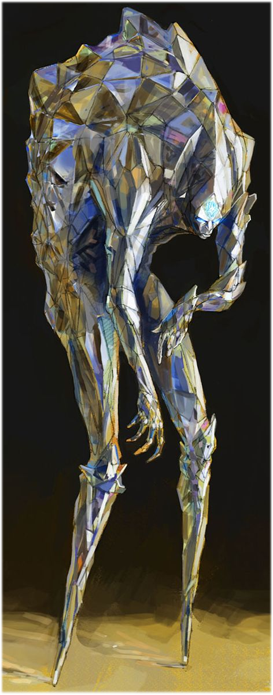

Specule
A prismatic entity, it reflects so much light that it appears as if it were more of a divine ghost than a creature formed from crystal and glass. One should never stare too deeply into its light, for that momentary glance is all it takes for it to be their last.


Phites
One of the many supporting variants of the X’Tal. Floating or scuttling, underground or trawling along the floors of the nearest seas, these troops are best used for their great adaptability and scouting potential. As the eyes and ears of the Collective, Phites allow for other X’Tal to know their surroundings before they’ve yet to even arrive.